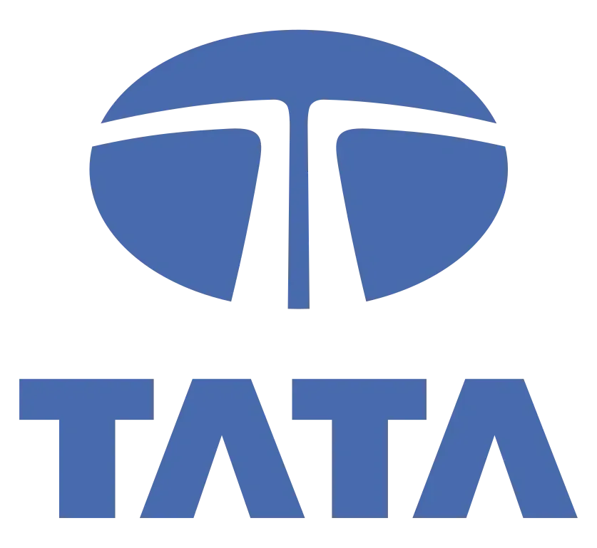

The business conglomerate—that storied organisational form comprising diverse business interests under unified ownership—has experienced a curious trajectory over recent decades. In Western economies, such structures fell into distinct disfavour during the late 20th century, with conventional wisdom dictating that focused enterprises would inevitably outperform their diversified counterparts. "Stick to your knitting" became the managerial maxim du jour, with corporate raiders dismantling diversified groups in the name of shareholder value and strategic coherence.
Yet across the Indian business landscape, a remarkable phenomenon unfolds: the emergence of digital conglomerates that challenge this established orthodoxy. These enterprises—exemplified by groups such as Reliance Industries, Tata Digital, and Adani—are constructing expansive digital ecosystems spanning seemingly disparate sectors, from telecommunications and retail to financial services and entertainment. Their evolution suggests not the obsolescence of the conglomerate structure but its fundamental reconceptualisation for the digital age.
This metamorphosis represents not merely technological enhancement of traditional business models but a sophisticated reimagining of the very nature of diversification, synergy, and competitive advantage. The digital conglomerate leverages data, platforms, and network effects to create value configurations impossible in the physical economy, while addressing the distinctive characteristics of emerging markets where institutional voids and relationship networks remain consequential.
The implications extend beyond India to challenge fundamental assumptions about optimal corporate structure in the digital era. As these Indian digital titans continue their remarkable ascent, they offer profound lessons about the evolution of business group structures in an age of technological transformation and market reconfiguration.
The Traditional Conglomerate: Rise, Fall, and Persistent Relevance
To understand the distinctive nature of today's digital conglomerates, one must first appreciate the evolution of the traditional business group structure, its theoretical underpinnings, and its particular manifestations in the Indian context:
The Traditional Rationale: Business groups historically emerged to address specific economic and institutional conditions. In developed economies, they frequently arose through vertical integration to secure supply chains, horizontal diversification to mitigate cyclical risk, or opportunistic expansion into adjacent markets. Their theoretical justification rested primarily on transaction cost economics—the notion that certain activities were more efficiently conducted within organisational boundaries than through market mechanisms.
The Western Decline: The conglomerate structure faced mounting criticism in Western economies through the 1970s and 1980s. Scholars and investors increasingly argued that diversification created inefficient internal capital markets, managerial distraction, cross-subsidisation of underperforming units, and governance challenges. The "conglomerate discount"—whereby diversified firms traded at valuations below the sum of their parts—became conventional wisdom, driving waves of corporate restructuring toward focused enterprises.
The Emerging Market Exception: Intriguingly, business groups maintained stronger theoretical justification and superior performance in emerging economies, where institutional voids—the absence of efficient capital markets, reliable contract enforcement, transparent regulations, and specialised intermediaries—created enduring rationales for diversification. In these contexts, conglomerates could substitute for underdeveloped institutions through internal capital allocation, talent development, and relationship networks spanning political and business domains.
India exemplifies this pattern, with traditional business houses like Tata Group, Birla, and Reliance historically outperforming focused enterprises by addressing institutional voids while leveraging political connections, reputation assets, and internal development mechanisms unavailable to standalone entities. These groups developed distinctive capabilities for operating across diverse sectors while maintaining family or promoter control—creating durable competitive advantages despite theoretical criticisms of the conglomerate form.
The Digital Inflection: The emergence of digital technologies introduced a profound inflection point in this evolutionary trajectory. Rather than rendering the conglomerate obsolete, digital capabilities have enabled a fundamental reconceptualisation of diversification advantages—creating new rationales for business group structures based not on traditional vertical integration or risk mitigation but on data integration, platform economics, and ecosystem orchestration.
This digital inflection has proven particularly significant in the Indian context, where traditional business groups possessed the scale, capital access, and governmental relationships necessary for ambitious digital transformation, while institutional voids continued to advantage entities capable of spanning sector boundaries. The result has been the emergence of distinctive digital conglomerates that leverage both traditional business group advantages and new technological capabilities to create unprecedented value configurations.
Case Study: Reliance Industries' Digital Ecosystem

The transformation of Reliance Industries from traditional petrochemical and retail conglomerate to digital ecosystem orchestrator exemplifies the metamorphosis of business group structures in the digital age. Under Mukesh Ambani's leadership, Reliance has executed perhaps the most ambitious digital pivot of any traditional conglomerate globally, creating an integrated ecosystem spanning telecommunications, retail, financial services, entertainment, and education. This transformation has proceeded through several strategic phases:
Digital Infrastructure Development
Reliance's digital transformation began not with consumer applications but with foundational infrastructure—specifically the $33 billion investment in Jio Platforms to create India's first all-4G network with unprecedented affordability (initially offering services entirely free, then at approximately £0.20 per gigabyte). This infrastructure play created immediate scale advantages through explosive subscriber growth—reaching 100 million users in just 170 days and eventually exceeding 400 million subscribers.
The strategic insight was profound: Ambani recognised that India's digital economy required not incremental improvement in connectivity but a step-change reduction in data costs to unlock mass adoption. By building this infrastructure foundation at unprecedented scale, Reliance created the preconditions for ecosystem development that subsequent digital initiatives could leverage.
Platform Development and Acquisition
With digital infrastructure established, Reliance systematically developed and acquired platforms spanning diverse sectors—including MyJio (telecommunications and services), JioMart (commerce), JioMoney (payments), JioSaavn (music streaming), JioCinema (video entertainment), JioMeet (video conferencing), and numerous others. Rather than pursuing standalone optimisation of each platform, Reliance explicitly designed these elements as components of an integrated ecosystem, with unified identity, payments, and data architecture.
The strategic approach transcended traditional conglomerate diversification by emphasising integration opportunities from inception—designing cross-platform user journeys, unified authentication, and consistent experience elements that created ecosystem advantages beyond standalone platform value. This approach leveraged Reliance's traditional capital allocation capabilities while introducing new platform design disciplines specific to the digital context.
Strategic Partnership Development
Recognising that even Reliance's resources were insufficient for comprehensive ecosystem development, Ambani orchestrated an extraordinary sequence of strategic partnerships and investments—raising over $20 billion from technology giants including Facebook (now Meta), Google, Microsoft, and Qualcomm alongside financial investors. These partnerships transcended conventional capital raising to include technology transfer, capability development, and strategic alignment across the digital ecosystem.
The partnership with Facebook proved particularly consequential, integrating WhatsApp with JioMart to create frictionless ordering capabilities for India's 400 million WhatsApp users. This integration exemplifies the distinctive advantages of digital conglomerate structures—creating value through cross-domain integration that standalone entities would struggle to orchestrate given the coordination challenges and competitive dynamics involved.
Physical-Digital Integration
While many digital platforms operate exclusively in the virtual domain, Reliance has leveraged its traditional conglomerate assets—including 15,000+ retail stores, extensive supply chain infrastructure, and petroleum retail outlets—to create seamless integration between physical and digital realms. This omnichannel approach recognises India's distinctive market characteristics, where physical infrastructure remains essential despite digital adoption.
The integration of JioMart with neighbourhood kirana stores exemplifies this approach—digitising inventory management and discovery for traditional merchants while leveraging their physical presence and customer relationships for last-mile fulfillment. This strategy has transformed potential competition between modern and traditional retail into symbiotic partnership—addressing the institutional void of fragmented retail infrastructure through digital orchestration rather than displacement.
Financial Services Embedding
Recognising financial services as the connective tissue of digital ecosystems, Reliance has systematically integrated payment, lending, insurance, and investment capabilities across its platforms—creating embedded financial experiences contextually delivered at relevant moments within user journeys. This approach transcends traditional financial services diversification to create contextual delivery mechanisms impossible in physical-only conglomerates.
The strategic significance extends beyond convenience to data advantages—with transaction data informing personalisation, risk assessment, and product development across the ecosystem. This data integration enables financial offerings with superior economics and enhanced relevance compared to standalone providers lacking equivalent behavioural visibility.
The results of this digital ecosystem development have been extraordinary: Jio Platforms achieved a valuation exceeding $65 billion (approximately £50 billion) through strategic investment rounds; Reliance Retail secured valuations approaching $100 billion (approximately £77 billion); and the integrated ecosystem has generated remarkable engagement metrics—with 70% of digitally acquired customers becoming omnichannel shoppers, customer retention rates 3.8 times higher for omnichannel versus single-channel customers, and customer lifetime value 4.2 times higher for ecosystem-engaged versus traditional shoppers.
What distinguishes Reliance's approach from traditional conglomerate strategy is its explicit focus on integration advantages rather than merely portfolio diversification—creating an ecosystem where cross-domain data flows, unified customer experiences, and network effects generate value impossible within standalone entities. This digital reconceptualisation of the conglomerate form leverages both traditional business group advantages (capital allocation, government relations, talent development) and new technological capabilities (platform design, data integration, network orchestration) to create unprecedented competitive advantage.
Case Study: Tata Group's Digital Transformation
The Tata Group, India's oldest and most respected conglomerate with operations spanning steel, automobiles, information technology, consumer products, and numerous other sectors, presents a distinctive case study in digital transformation of a traditional business house. Unlike Reliance's centralised approach, Tata has pursued a federated digital strategy that balances group-level integration with operating company autonomy—creating a unique model of digital conglomerate evolution. Tata's digital transformation has unfolded through several interconnected initiatives:
Tata Digital Establishment
Recognising the need for dedicated digital expertise beyond traditional IT capabilities, the Tata Group established Tata Digital as a focused entity responsible for driving digital transformation across the conglomerate. This structural approach created a centre of digital excellence while maintaining the group's federated governance model—balancing innovation impetus with established operating company strengths.
The strategic significance extends beyond organisational design to talent acquisition—enabling Tata to attract digital specialists who might hesitate to join traditional operating companies while accessing the group's vast resources and customer relationships. This approach addresses a common constraint for traditional conglomerates seeking digital transformation: the challenge of integrating digital talent and mindsets within conventional corporate structures.
Tata Neu Superapp Development
At the core of Tata's digital strategy is the Tata Neu superapp—an integrated digital environment unifying previously disparate Tata brands including Croma (electronics), Westside (fashion), Titan (watches and jewellery), BigBasket (grocery), 1mg (pharmacy), and Tata CLiQ (multi-category e-commerce). This unified interface enables consistent customer experience across brands while aggregating engagement, transaction, and preference data into a coherent customer view.
The platform has achieved remarkable metrics: 15 million active users within six months of launch, cross-brand purchasing by 47% of active customers, and loyalty point redemption across categories by 38% of users. This unified digital environment represents the foundation for Tata's broader ecosystem strategy—creating digital coherence across their diverse physical retail operations.
Strategic Digital Acquisitions
Recognising that organic capability development would prove prohibitively slow for certain digital domains, Tata executed strategic acquisitions of established digital platforms—most notably BigBasket (India's leading online grocery platform) and 1mg (a prominent digital pharmacy). These acquisitions provided immediate digital capabilities, established customer bases, and specialised talent that would have required years to develop internally.
The strategic approach transcended traditional conglomerate acquisition logic (which typically emphasises standalone financial performance) to prioritise ecosystem integration potential—specifically how these digital properties would enhance the broader Tata digital ecosystem through data synergies, cross-selling opportunities, and unified customer experiences. This acquisition strategy exemplifies the distinctive investment logic of digital conglomerates, where ecosystem effects frequently outweigh standalone financial considerations.
NeuPass Loyalty Integration
Extending beyond digital unification, Tata has implemented comprehensive loyalty integration through the NeuPass programme—enabling customers to earn and redeem points across physical stores, digital platforms, and service experiences throughout the Tata ecosystem. This loyalty integration creates tangible incentives for omnichannel engagement while generating rich behavioural data spanning physical and digital contexts.
The impact has been substantial: NeuPass members shop across 3.4 Tata brands on average (compared to 1.7 for non-members), exhibit 62% higher annual spending, and demonstrate 54% higher retention rates. This loyalty integration represents digital innovation specifically aligned with Indian consumer behaviour—where relationship continuity and perceived value remain central to retail engagement.
Air India Digital Transformation
Tata's acquisition of Air India created a distinctive opportunity to apply digital transformation capabilities to a heritage brand with significant operational challenges. The group has implemented comprehensive digital initiatives spanning customer experience (mobile app redesign, personalised communications), operations (crew management systems, maintenance optimisation), and commercial functions (revenue management, distribution strategy).
This transformation exemplifies how digital capabilities can revitalise traditional conglomerate assets—applying data analytics, platform thinking, and experience design to create value in conventional sectors historically managed through industrial-era approaches. The initiative demonstrates the potential for digital capabilities to transform not merely consumer-facing businesses but operational enterprises across diverse sectors.
What distinguishes Tata's approach is its federated model of digital transformation—balancing group-level integration with operating company autonomy. This approach enables digital innovation while preserving the distinctive capabilities and heritage of individual Tata businesses—creating a model potentially more replicable for diversified conglomerates globally than Reliance's more centralised approach. The strategy leverages Tata's traditional strengths in trust, governance, and sectoral expertise while introducing new digital capabilities at ecosystem scale.
Case Study: Adani Group's Infrastructure Digitisation
The Adani Group presents a distinctive case study in digital conglomerate evolution focused primarily on infrastructure sectors—including ports, airports, energy, logistics, and natural resources. Unlike purely consumer-facing digital ecosystems, Adani's approach demonstrates how digital capabilities can transform traditional infrastructure conglomerates into integrated ecosystems spanning physical and digital domains. Adani's digital transformation encompasses several strategic dimensions:
Integrated Logistics Platform Development
At the core of Adani's digital strategy is the development of an integrated logistics platform spanning the group's ports, airports, warehouses, and transportation assets. This platform provides unified visibility, booking capabilities, and optimisation algorithms across traditionally siloed infrastructure components—creating seamless movement of goods through digital orchestration of physical assets.
The strategic significance extends beyond operational efficiency to fundamental business model evolution—transforming Adani from an infrastructure asset operator to an integrated logistics solutions provider orchestrating end-to-end supply chains. This evolution leverages the group's traditional advantages in physical infrastructure while creating new value through digital integration previously impossible in conventional conglomerate structures.
Renewable Energy Intelligence Systems
Within its substantial renewable energy portfolio, Adani has implemented sophisticated digital systems for asset performance optimisation, predictive maintenance, and grid integration—creating intelligence layers that significantly enhance conventional infrastructure returns. These systems leverage artificial intelligence for solar production forecasting, wind farm optimisation, and energy trading strategies that maximise returns across diverse generation assets.
The impact includes 7% higher energy production from digitally optimised versus conventional renewable assets, 43% reduction in unplanned downtime, and 12% improvement in revenue through optimised energy trading strategies. These outcomes demonstrate how digital capabilities can transform traditional infrastructure economics—creating performance advantages impossible through physical assets alone.
Smart Airport Development
Across its airport portfolio, Adani has implemented comprehensive digital transformation spanning passenger experience, operational management, and commercial optimisation. These initiatives include biometric processing systems, predictive resource allocation, contactless retail, personalised engagement platforms, and integrated ground handling optimisation—creating airports that function as digital platforms rather than merely physical infrastructure.
The strategic approach transcends conventional airport management to create data-driven ecosystems generating insights across passenger journeys, operational processes, and commercial activities. This transformation exemplifies how digital capabilities can reimagine traditional infrastructure concessions—creating sustainable advantage beyond the core physical assets through superior customer experience and operational intelligence.
Supplier Ecosystem Development
Recognising that infrastructure development requires extensive supply chain orchestration, Adani has created digital platforms connecting thousands of vendors, contractors, and service providers across its project ecosystem. These platforms standardise procurement processes, enable performance analytics, facilitate financial services integration, and create transparency across complex supply networks—addressing the institutional void of fragmented contractor ecosystems through digital orchestration.
The impact includes procurement cost reduction of 9% through enhanced competition and transparency, supplier quality improvement through performance analytics, and working capital optimisation through integrated financial services. This ecosystem orchestration demonstrates how digital capabilities can transform traditional conglomerate supplier relationships from transactional interactions to data-enabled partnerships.
Cross-Business Data Integration
Perhaps most distinctively, Adani has implemented sophisticated data integration across its diverse infrastructure businesses—creating insights impossible within standalone operations. This integration enables identification of patterns spanning energy consumption, logistics movements, passenger travel, and commodity flows—revealing correlations and causal relationships invisible within traditional siloed operations.
The strategic value extends beyond operational optimisation to fundamental competitive advantage through superior predictive capabilities. By identifying patterns across diverse infrastructure components, Adani can anticipate demand shifts, capacity requirements, and economic trends with greater precision than competitors restricted to single-sector visibility—creating "infrastructure intelligence" as a distinctive capability.
What distinguishes Adani's approach is its focus on digitising infrastructure conglomerates rather than purely consumer-facing businesses—demonstrating how digital capabilities can transform traditional capital-intensive enterprises that might seem furthest from digital disruption. This approach creates value through cross-domain data flows, integrated operations, and ecosystem orchestration that would be impossible for focused infrastructure players lacking equivalent breadth and integration.
The strategy leverages Adani's traditional strengths in infrastructure development, government relationships, and capital allocation while introducing new digital capabilities that fundamentally alter the economics and competitive dynamics of infrastructure businesses. This transformation suggests that digital reconceptualisation of the conglomerate form extends beyond consumer sectors to encompass even the most physical and regulated industries.
The Distinctive Advantages of Digital Conglomerates
The case studies examined reveal several distinctive advantages of digital conglomerate structures—advantages that transcend traditional diversification benefits to create new sources of competitive differentiation:
Data Synergies Across Domains
Perhaps most fundamentally, digital conglomerates generate data synergies impossible within focused enterprises—creating comprehensive visibility across customer behaviours, operational patterns, and market dynamics that span traditionally separate domains. These data synergies enable superior personalisation, risk assessment, demand forecasting, and innovation targeting compared to single-domain competitors with narrower behavioural visibility.
A digital conglomerate spanning telecommunications, retail, financial services, and entertainment can develop holistic customer understanding encompassing communication patterns, purchase behaviours, financial circumstances, and content preferences—enabling offers, experiences, and products calibrated to multidimensional preferences rather than domain-specific behaviours alone. This comprehensive intelligence creates "data moats" increasingly difficult for focused competitors to overcome regardless of their domain-specific excellence.
Network Effect Amplification
Digital conglomerates can systematically amplify network effects across domains—using established positions in certain sectors to accelerate adoption in adjacent categories through reduced acquisition costs, enhanced trust transfer, and embedded integration advantages. This cross-domain acceleration enables more rapid scaling than standalone digital businesses, which must build network effects independently for each new offering.
Reliance's ability to leverage its 400+ million Jio telecommunications subscribers for accelerated adoption of JioMart, JioSaavn, and JioCinema exemplifies this advantage—creating user acquisition economics superior to standalone competitors despite potentially comparable or even superior standalone products. This network acceleration represents perhaps the most significant advantage of digital conglomerate structures in winner-take-most platform markets where adoption velocity frequently determines competitive outcomes.
Unified Experience Orchestration
Beyond data and network advantages, digital conglomerates can orchestrate unified customer experiences spanning traditionally separate domains—creating seamless journeys that reduce friction, enhance consistency, and improve satisfaction compared to fragmented interactions across specialised providers. This orchestration capability becomes increasingly valuable as customers prioritise integration and simplicity over domain-specific optimisation.
Tata Neu's ability to provide consistent authentication, payment, loyalty, and support experiences across diverse brands and categories exemplifies this advantage—creating ecosystem-level experience benefits beyond standalone excellence in any specific category. This orchestration advantage addresses the growing customer preference for integrated experiences that minimise cognitive burden and decision complexity across life domains.
Embedded Service Contextualization
Digital conglomerates can contextually embed services within relevant user journeys across their ecosystem—delivering capabilities precisely when needed rather than requiring deliberate engagement with standalone applications. This contextual embedding creates superior discovery, adoption, and usage compared to focused providers that must generate dedicated engagement for each service interaction.
Reliance's embedding of financial services within shopping, entertainment, and communication contexts exemplifies this advantage—delivering payment, lending, and insurance capabilities at contextually relevant moments within broader user journeys. This embedding addresses the growing preference for ambient capabilities integrated into primary activities rather than requiring separate engagement with dedicated service providers.
Enhanced Lifetime Value Capture
By engaging customers across multiple domains and life stages, digital conglomerates can capture enhanced lifetime value compared to domain-specific competitors—reducing acquisition costs through cross-selling, increasing retention through ecosystem lock-in, and generating superior economics through comprehensive relationship scope. This lifetime value advantage creates fundamental unit economics superior to focused competitors regardless of their domain-specific excellence.
The Tata Group's discovery that NeuPass members shop across 3.4 Tata brands on average (compared to 1.7 for non-members) and exhibit 62% higher annual spending exemplifies this advantage—creating customer economics that enable more aggressive acquisition investment and retention initiatives than standalone competitors can justify based on single-domain value capture. This comprehensive relationship scope increasingly determines competitive sustainability in digital markets where customer acquisition costs continue rising across categories.
These distinctive advantages suggest that digital technologies have not rendered the conglomerate structure obsolete but rather created new rationales for diversification based on integration benefits impossible in the physical economy alone. While traditional conglomerates frequently struggled to create genuine synergies beyond financial engineering and nominal shared services, digital conglomerates can generate substantial cross-domain advantages through data flows, network effects, experience integration, contextual embedding, and lifetime value optimisation that collectively create sustainable competitive differentiation.
Implications for Business Group Evolution Globally
The success of Indian digital conglomerates carries significant implications for business group evolution globally—suggesting potential reconsideration of optimal corporate structure in the digital era:
Conglomerate Reappraisal in Developed Markets
The distinctive advantages demonstrated by Indian digital conglomerates suggest potential reappraisal of conglomerate structures in developed markets—where decades of focus on corporate specialisation have potentially overlooked the emerging benefits of cross-domain integration in digital contexts. While traditional diversification benefits remain questionable, data synergies and network effect amplification potentially justify revisiting business group structures with digital integration advantages that transcend conventional conglomerate logic.
Recent moves by Amazon (expanding from e-commerce to cloud services, entertainment, healthcare, and physical retail), Alphabet (diversifying beyond search into autonomous vehicles, life sciences, smart home systems, and enterprise services), and Meta (building a metaverse ecosystem spanning social networks, virtual reality, payments, and commerce) suggest implicit recognition of digital conglomerate advantages—though these organisations typically avoid conglomerate terminology given its negative connotations in Western markets.
Emerging Market Advantage in Ecosystem Competition
The persistence of traditional business groups in emerging markets, combined with accelerating digital transformation, potentially creates advantage in ecosystem competition compared to markets where corporate fragmentation preceded digital evolution. The ability of established conglomerates to leverage existing scale, capital access, governmental relationships, and cross-domain operations for digital ecosystem development potentially enables more rapid and comprehensive integration than possible in fragmented corporate environments.
This structural advantage may enable emerging market conglomerates to develop digital ecosystems with scope and integration advantages difficult to replicate in markets where anti-trust concerns, investor preferences, and corporate governance norms favour focused enterprises—potentially creating distinctive competitive advantage in global digital competition despite historically lagging in traditional technology development.
New Integration Mechanisms Beyond Traditional Corporate Structures
The distinctive integration mechanisms demonstrated by digital conglomerates—including unified data architecture, shared identity systems, embedded service delivery, and experience orchestration—suggest potential evolution beyond traditional corporate structures that relied primarily on financial consolidation, shared services, and nominal management coordination. These digital integration mechanisms enable more substantive synergies while potentially requiring less bureaucratic overhead than traditional conglomerate coordination approaches.
This evolution suggests possibility for "lighter-weight" conglomerate structures that capture digital integration advantages without the managerial complexity and governance challenges that historically plagued diversified enterprises. Platform-based integration potentially enables coordination benefits without corresponding bureaucratic costs—addressing a fundamental historical weakness of conglomerate structures.
Balancing Scale and Innovation Across Integration Models
The contrasting approaches of Reliance (centralised ecosystem development), Tata (federated integration model), and Adani (infrastructure digitisation focus) suggest multiple viable paths for digital conglomerate evolution—with different models potentially optimal based on specific sector characteristics, organisational heritage, and strategic priorities. This diversity of approaches indicates that digital conglomerate advantage stems not from a universal structural template but from thoughtful alignment of integration mechanisms with specific business context and capabilities.
The coexistence of multiple successful models suggests digital conglomerate evolution represents not convergence toward a singular optimal structure but thoughtful calibration of integration intensity, centralisation degree, and coordination mechanisms based on specific ecosystem characteristics and organisational capabilities. This calibration challenge represents perhaps the central strategic question for business groups navigating digital transformation globally.
Reassessment of Institutional Void Theory in Digital Contexts
The persistence and indeed flourishing of conglomerate structures in India's increasingly sophisticated market environment suggests potential reassessment of institutional void theory—which traditionally explained business group advantage primarily through compensation for underdeveloped institutions. While institutional voids certainly continue influencing corporate structure, the distinctive advantages of digital conglomerates appear more fundamental—rooted in data synergies, network effects, and integration benefits that remain valuable even as conventional institutional voids diminish.
This evolution suggests business group structures may maintain or even enhance their relevance despite institutional development—indicating that digital integration benefits potentially transcend the traditional theoretical justifications for conglomerate structures in emerging markets. This reassessment carries significant implications for corporate structure evolution as emerging markets continue institutional sophistication while simultaneously pursuing digital transformation.
These implications suggest that rather than witnessing the inevitable decline of business groups predicted by conventional corporate evolution theories, we may observe a fundamental reconfiguration of the conglomerate form—with digital integration creating new rationales for diversification that transcend traditional conglomerate logic while addressing the limitations that historically constrained such structures in developed markets.
Challenges and Limitations of Digital Conglomerate Models
Despite their significant advantages, digital conglomerate structures face substantial challenges and limitations that constrain their potential advantages or introduce distinctive vulnerabilities:
Governance Complexity Across Traditional and Digital Operations
Digital conglomerates must develop governance mechanisms spanning traditional and digital operations—addressing the tension between conventional management approaches optimised for physical businesses and the agility requirements of digital initiatives. This governance challenge frequently manifests in cultural conflicts, decision velocity misalignment, and resource allocation tensions between established and emerging business units.
Tata's approach of establishing a dedicated digital entity while maintaining federated operating company autonomy represents one governance solution, while Reliance's more centralised model reflects an alternative approach. Neither structure eliminates the fundamental tension between traditional and digital governance requirements—a challenge that continues constraining digital conglomerate effectiveness despite structural innovation attempts.
Data Privacy and Regulatory Constraints
The data synergies central to digital conglomerate advantage increasingly face regulatory constraints as privacy frameworks evolve globally. India's forthcoming personal data protection legislation, alongside global regulatory trends exemplified by the EU's GDPR and California's CCPA, potentially limit the seamless data flows across domains that enable many digital conglomerate advantages.
These regulatory constraints may force digital conglomerates to develop more sophisticated consent frameworks, purpose limitation approaches, and anonymisation techniques—potentially reducing the seamless integration advantages currently available through unrestricted cross-domain data utilisation. This regulatory evolution represents perhaps the most significant external constraint on digital conglomerate advantage realisation in coming years.
Talent Acquisition and Retention Challenges
Digital conglomerates frequently struggle with talent acquisition and retention given the preference of many digital specialists for focused technology organisations, startups, or global technology leaders. The perception of conglomerates as bureaucratic, hierarchical, and traditional—regardless of their digital transformation efforts—creates distinctive challenges in competing for scarce technical talent essential for digital capability development.
This talent constraint frequently forces digital conglomerates to rely more heavily on acquisitions and partnerships for capability development—potentially limiting organic innovation capacity compared to digital natives with superior talent attraction capabilities. Addressing this constraint requires fundamental evolution of organisational culture, compensation models, and working environments to compete effectively in increasingly competitive technical talent markets.
Innovation Velocity Limitations
Despite their resource advantages, digital conglomerates often struggle with innovation velocity compared to focused digital competitors—constrained by approval processes, brand risk considerations, legacy system integration requirements, and organisational complexity that collectively reduce the agility essential for digital competition. This velocity limitation creates vulnerability to more focused competitors capable of rapid iteration and experimentation despite resource constraints.
Addressing this challenge requires sophisticated approaches to organisational ambidexterity—enabling innovation at digital speed within specific domains while maintaining appropriate governance across the broader enterprise. This balancing act represents perhaps the central management challenge for digital conglomerate leadership teams seeking to combine integration advantages with competitive innovation velocity.
Digital Disintermediation Vulnerability
Perhaps most fundamentally, digital conglomerates face potential vulnerability to platform disintermediation by global technology giants capable of providing integration benefits without corresponding physical infrastructure investment. Companies like Google, Amazon, Facebook, and Apple have demonstrated capacity to create ecosystem benefits through primarily digital means—potentially offering comparable integration advantages with superior economics given their asset-light operational models.
This disintermediation threat is particularly acute in markets with high digital adoption, limited regulatory protection, and strong global technology presence—potentially constraining digital conglomerate sustainability despite current advantages. Addressing this vulnerability requires thoughtful development of distinctive advantages difficult for purely digital competitors to replicate—whether through physical infrastructure integration, regulatory navigation capabilities, or localisation advantages specific to market context.
These challenges suggest that while digital conglomerate structures offer significant advantages, they are neither universally superior nor immune to distinctive vulnerabilities that potentially constrain their long-term sustainability. The most sophisticated digital conglomerates recognise these limitations and develop specific strategies to address governance complexity, regulatory constraints, talent challenges, innovation velocity limitations, and disintermediation vulnerability while leveraging their distinctive integration advantages.
Conclusion: The Conglomerate Reconceived
The emergence of digital conglomerates across India's business landscape represents not merely technological enhancement of traditional business models but fundamental reconceptualisation of corporate structure for the digital age. Rather than rendering the conglomerate obsolete, digital capabilities have created new rationales for business group structures based on data synergies, network effect amplification, unified experience orchestration, contextual service embedding, and enhanced lifetime value capture that collectively transcend traditional diversification benefits.
The case studies examined—Reliance Industries' ecosystem development, Tata Group's federated digital transformation, and Adani Group's infrastructure digitisation—illustrate distinctive approaches to this structural evolution, each leveraging specific organisational heritage and sectoral focus while creating unprecedented integration advantages impossible in the physical economy alone. These approaches demonstrate that digital conglomerate evolution encompasses not a singular optimal structure but thoughtful calibration of integration mechanisms to specific business context and capabilities.
The implications extend beyond India to suggest potential reconsideration of optimal corporate structure globally—with digital integration potentially justifying business group structures even as traditional conglomerate rationales diminish. This evolution suggests not the inevitable decline of conglomerates predicted by conventional corporate evolution theories but their fundamental reconceptualisation for an era where data flows, network effects, and ecosystem orchestration create value configurations impossible within focused enterprises alone.
The digital conglomerate remains subject to significant challenges and limitations—spanning governance complexity, regulatory constraints, talent challenges, innovation velocity limitations, and disintermediation vulnerability. These constraints suggest digital conglomerate structures offer contingent rather than universal advantage, with their sustainability dependent on thoughtful navigation of specific limitations while leveraging distinctive integration benefits.
As we witness this structural evolution, perhaps the most profound insight is that technological transformation renders few management principles truly eternal. The conventional wisdom regarding corporate focus that dominated late 20th century management thinking reflected specific technological and market conditions of that era—conditions fundamentally altered by digital capabilities that create new possibilities for value creation through integration and orchestration across traditionally separate domains.
The digital conglomerate thus represents not merely adaptation of traditional structures but their fundamental reconception—creating business group forms suitable for an age where data flows transcend physical boundaries, network effects determine competitive outcomes, and ecosystem orchestration creates value beyond the reach of focused enterprises regardless of their domain-specific excellence. In this emerging landscape, the leaders who recognize and leverage these new structural possibilities may define the next generation of business titans not merely in India but globally.